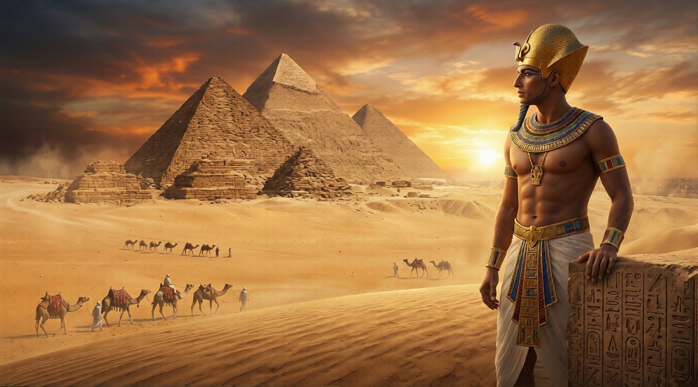
Égypte Éternelle · Dossier Thématique
Plongée au cœur des chefs-d'œuvre architecturaux qui ont défié les millénaires et transformé le désert en jardin des dieux
Origines · ~2650 av. J.-C.
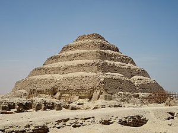
Avant la pyramide, il y avait le mastaba — ce banc de briques crues, humble et rectangulaire, sous lequel les dignitaires de l'Égypte prédynastique attendaient leur résurrection. C'est d'un empilement de mastabas que jaillit, vers 2650 avant notre ère, la première révolution architecturale de l'humanité : la pyramide à degrés de Djéser, à Saqqarah.
Son architecte, Imhotep, est l'un des premiers génies nommément connus de l'histoire. Médecin, astronome, scribe et bâtisseur, il concevra pour le pharaon Djéser une tombe de six gradins atteignant 62 mètres de hauteur — la première grande construction en pierre taillée au monde. Les Égyptiens le déifieront des siècles plus tard : voilà ce que signifie bâtir pour l'éternité.
La pyramide ne fut jamais seulement une tombe. Elle était une machine cosmique, un vecteur d'élévation reliant la terre au soleil, le roi aux étoiles impérissables.
— Jan Assmann, La mémoire culturelle, 1992La forme pyramidale elle-même est lourde de sens. Elle évoque le ben-ben, la pierre primordiale conique sur laquelle, selon la cosmologie héliopolitaine, le dieu Atoum s'était manifesté au matin du premier jour. Construire une pyramide, c'était inscrire dans le paysage la mémoire de la création. C'était aussi aligner le pharaon défunt avec Osiris, dieu des morts et de la résurrection, dont la justice — la Maât — gouvernait l'univers tout entier.
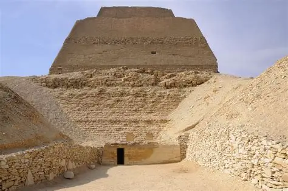
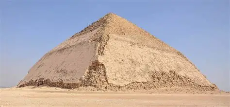
L'évolution vers la forme canonique ne fut pas sans accidents. La pyramide de Meïdoum, attribuée à Snéfrou (père de Khéops), s'effondra partiellement durant l'Antiquité — probablement pendant ou juste après sa construction — faute d'un angle de pente trop ambitieux. À Dahchour, la même leçon fut tirée en direct : la Pyramide rhomboïdale de Snéfrou vit son angle corrigé à mi-hauteur, passant de 54° à 43°, donnant à ce monument unique son profil « cassé » caractéristique. Snéfrou aurait ainsi construit, seul, plus de volume de pierre que son fils Khéops — testament d'un règne de recherches architecturales acharnées.
𓂀 Le saviez-vous ?
Imhotep fut le premier architecte connu de l'histoire à avoir travaillé exclusivement avec de la pierre taillée, abandonnant les briques de boue séchée utilisées jusqu'alors. Son nom signifie littéralement « Celui qui vient en paix ».
Plateau de Gizeh · ~2560–2510 av. J.-C.
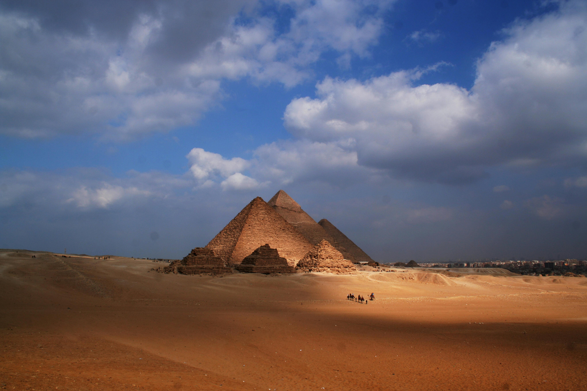
Aucun site dans l'histoire de l'humanité ne porte autant de mythes, de mensonges et de vérités enchevêtrées que le plateau de Gizeh. Dominant la rive occidentale du Nil à la lisière du désert libyque, il abrite trois des monuments les plus photographiés, les plus mesurés, les plus rêvés de notre civilisation : les pyramides de Khéops, Khéphren et Mykérinos.
Bâtie vers 2560 avant notre ère pour le pharaon Khéops (Khnoum-Khoufoui de son vrai nom), la Grande Pyramide est, pour les savants de la période hellénistique, la première des Sept Merveilles du monde — et la seule à avoir survécu. Sa hauteur originelle : 146,6 mètres. Son emprise au sol : 230 mètres de côté, avec une précision d'orientation au nord magnétique de l'ordre de 3 minutes d'arc. Elle renferme environ 2,3 millions de blocs de calcaire et de granit pesant en moyenne 2,5 tonnes, certains blocs de granit dans la chambre funéraire atteignant 80 tonnes.
| Monument | Pharaon | Période | Hauteur orig. | Base |
|---|---|---|---|---|
| Grande Pyramide | Khéops | ~2560 av. J.-C. | 146,6 m | 230 m |
| Pyramide de Khéphren | Khéphren | ~2530 av. J.-C. | 143,5 m | 215 m |
| Pyramide de Mykérinos | Mykérinos | ~2510 av. J.-C. | 65 m | 105 m |
| Grand Sphinx | Khéphren (?) | ~2530 av. J.-C. | 20 m | 73 m (longueur) |
Taillé directement dans le roc calcaire, le Grand Sphinx (Hor-em-Akhet, « Horus à l'horizon ») mesure 73 mètres de long pour 20 mètres de haut. Il représente un lion au corps massif couronné d'un visage royal — probablement Khéphren, bien que la question reste débattue. Son regard fixe l'est, vers le soleil levant, symbolisant la renaissance quotidienne du pharaon divinisé en Rê-Horakhty.
L'une des énigmes majeures du site est la Stèle du Songe, érigée par Thoutmôsis IV entre les pattes du Sphinx. Le jeune prince, endormi à l'ombre du colosse lors d'une chasse, aurait reçu en vision la promesse du trône en échange de la restauration de la statue, ensablée jusqu'au cou. Ce texte est la première mention connue du Sphinx sous le nom d'Hor-em-Akhet.
Les projections en lumière muon de 2023 ont révélé des anomalies de densité dans la chambre de la reine de la Grande Pyramide, laissant entrevoir peut-être une salle inconnue.
— Projet ScanPyramids / Université de Nagoya, 2023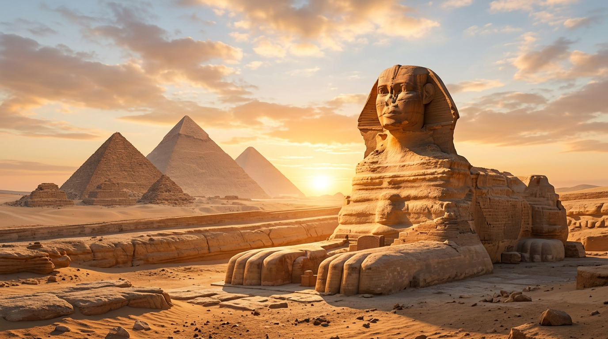
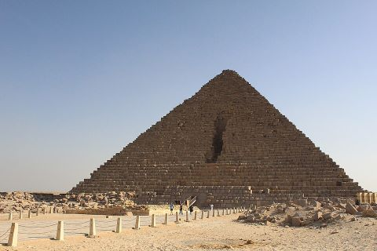
Temples & Sanctuaires · ~1550–1070 av. J.-C.
Si les pyramides sont les monuments de la mort et du passage, les temples sont ceux de la vie divine permanente. L'Égypte pharaonique a élevé certains des sanctuaires les plus grandiose jamais construits, du delta du Nil jusqu'en Nubie. Ils ne sont pas des lieux de culte collectif au sens moderne — les fidèles n'y pénètrent pas — mais des palais cosmiques où les prêtres, délégués du roi, nourrissent, habillent et divertissent quotidiennement les statues des dieux.
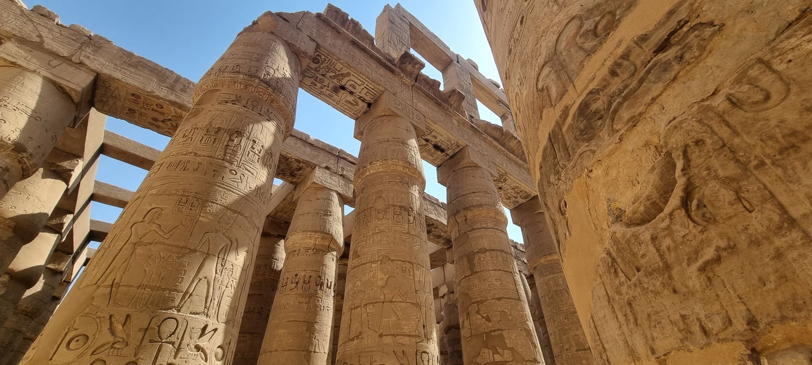
Nouvel Empire · ~1550–1070 av. J.-C.
Le plus grand complexe religieux jamais construit, agrandi pendant 2 000 ans. La grande salle hypostyle abrite 134 colonnes gigantesques, certaines de 21 mètres de hauteur. Consacré à Amon-Rê, roi des dieux.
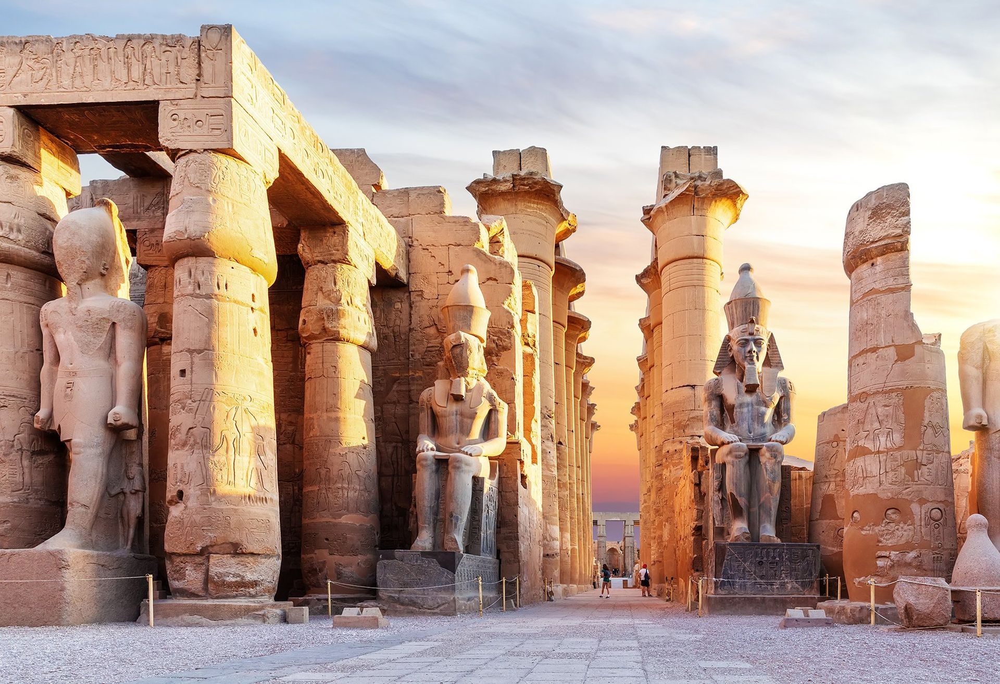
Aménophis III · ~1380 av. J.-C.
Relié à Karnak par l'allée des Sphinx longue de 3 km, ce temple fut le cœur de la fête d'Opet, célébration annuelle de la royauté divine et de la fertilité du Nil.
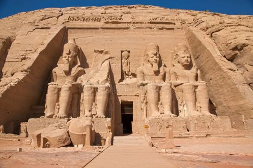
Ramsès II · ~1264 av. J.-C.
Deux temples rupestres creusés dans la falaise nubienne. Deux fois par an — aux équinoxes — un rayon de lumière illumine exactement les statues de Ramsès, Amon et Rê, laissant Ptah (dieu des ténèbres) dans l'ombre.
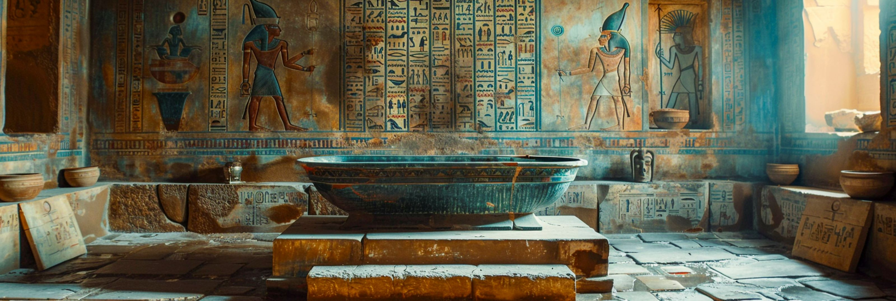
Hatchepsout · ~1479 av. J.-C.
Temple funéraire de la grande pharaonne Hatchepsout, niché dans la falaise thébaine. Son architecture en terrasses superposées, aux colonnades élancées, reste unique dans l'art égyptien.
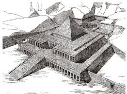
Ptolémées · 237–57 av. J.-C.
Consacré à Horus, ce temple ptolémaïque est le mieux conservé d'Égypte. Ses murs intacts nous livrent une encyclopédie des rites, des mythes et de l'astronomie sacrée des derniers siècles pharaoniques.
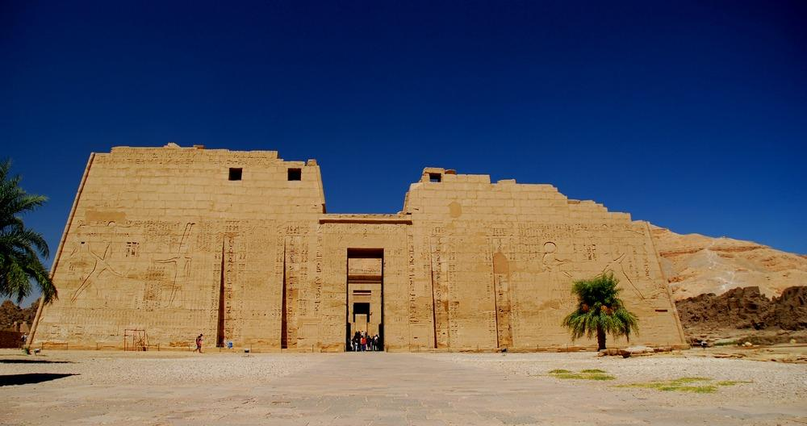
Ptolémées / époque romaine
Sanctuaire d'Isis sur une île du Nil, démonté pierre par pierre entre 1972 et 1980 pour le sauver des eaux du lac Nasser. Chef-d'œuvre de la coopération internationale pour le patrimoine.
Tout grand temple obéit à une topographie symbolique précise. On y pénètre par un pylône monumental — deux tours trapézoïdales flanquant l'entrée, héritage des forteresses primitives du désert. Devant lui se dressaient des obélisques, paires de doigts de pierre pointés vers le ciel solaire. La cour à ciel ouvert, accessible aux notables, précède la salle hypostyle, forêt de colonnes évoquant les marais primordiaux du delta, avant le saint des saints où reposait la barque sacrée portant la statue divine.
𓌀 Architecture sacrée
Les temples égyptiens étaient orientés de façon astronomique : l'axe principal pointait souvent vers le lever ou coucher du soleil à une date rituelle précise (solstice, équinoxe, fête principale). L'architecture était ainsi une horloge cosmique autant qu'un lieu de culte.
« L'Égypte est un don du Nil — mais ses monuments sont un don à l'éternité. »
Ingénierie · Un défi millénaire
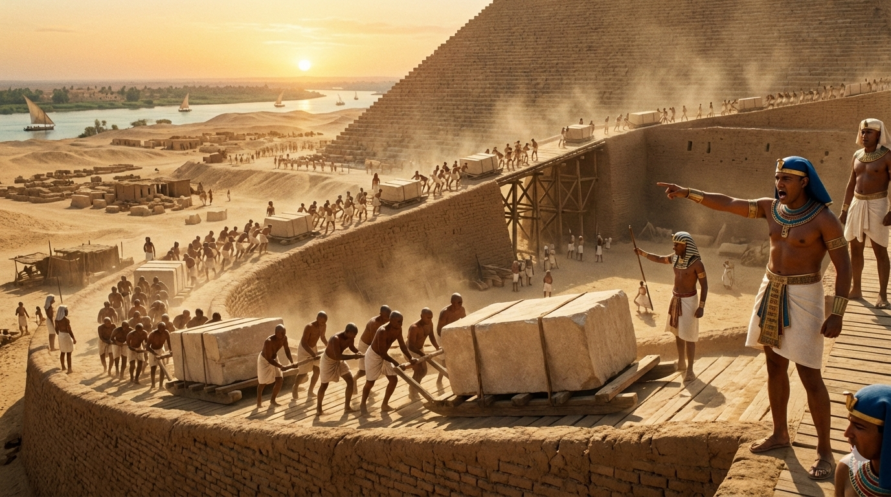
C'est la question que tout visiteur se pose devant la Grande Pyramide. Comment, sans roue, sans fer, sans poulie, des hommes ont-ils pu déplacer des millions de blocs pesant chacun plusieurs tonnes ? La réponse, progressive, est moins mystérieuse que les théories pseudoscientifiques voudraient le faire croire — mais bien plus impressionnante.
Une idée fausse tenace, véhiculée par Hérodote et amplifiée par le cinéma hollywoodien, peint les pyramides comme des œuvres d'un esclavage de masse. Les fouilles menées depuis les années 1990 sur le site de Heit el-Ghourab (la « ville des bâtisseurs ») par Mark Lehner et Zahi Hawass ont définitivement réfuté cette vision. Les ouvriers étaient des travailleurs permanents et temporaires libres, nourris, soignés, logés et enterrés avec soin. Les papyrus de Merer — découverts en 2013 à Ouadi el-Jarf et datant du règne de Khéops — constituent le journal de bord le plus ancien jamais retrouvé : ils décrivent le transport par bateau de blocs de calcaire depuis les carrières de Toura jusqu'au chantier de Gizeh.
Le débat sur les rampes de construction n'est pas clos, mais plusieurs hypothèses coexistent avec des arguments solides. La rampe frontale unique, étudiée par l'ingénieur Franz Löhner, impliquerait une rampe dont la longueur aurait dépassé un kilomètre pour la Grande Pyramide — logistiquement problématique. La théorie de la rampe hélicoïdale (spiralant autour de la pyramide) est défendue par Jean-Pierre Houdin, architecte français qui a modélisé en 3D l'intérieur de la pyramide et identifié une rampe interne pour les derniers étages.
Un bas-relief de la tombe de Djehoutihotep (vers 1880 av. J.-C.) montre explicitement des équipes versant du lait ou de l'eau devant un traîneau pour lubrifier le sol lors du transport d'une statue colossale. Des simulations modernes ont montré que cette simple technique permettait de réduire de moitié la force de traction nécessaire.
Les papyrus de Merer — découverts en 2013 — constituent le plus ancien journal de chantier de l'humanité. Ils décrivent avec précision la logistique du transport des blocs destinés à Gizeh.
— Pierre Tallet, Les papyrus de la Mer Rouge, 2017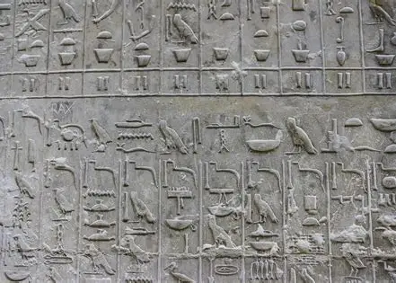
Les Égyptiens utilisaient une unité de mesure fondamentale : la coudée royale (environ 52,5 cm), divisée en 7 paumes et 28 doigts. Des niveaux à eau, des équerres, des cordeaux et des plombs permettaient d'obtenir les remarquables précisions relevées à Gizeh : les quatre côtés de la Grande Pyramide diffèrent de moins de 5 centimètres entre eux, et son orientation cardinale atteint une précision de 3 à 4 minutes d'arc. Comment ? Probablement par l'observation des étoiles circumpolaires — celles qui ne se couchent jamais — pour déterminer le nord vrai avec une précision remarquable.
𓇳 Chiffres clés du chantier de Gizeh
Selon les estimations actuelles : environ 20 000 à 30 000 ouvriers sur le site (dont une équipe permanente de 5 000), une durée de construction de 20 à 30 ans pour la Grande Pyramide, et un volume total d'environ 2,6 millions de mètres cubes de pierre taillée.
Frise chronologique
Première grande construction en pierre taillée du monde, conçue par Imhotep. Six degrés, 62 m de hauteur.
Transition vers la forme pyramidale lisse. La pyramide rhomboïdale témoigne des tâtonnements audacieux de l'ingénierie pharaonique.
Seule merveille du monde antique encore debout. 146,6 m, 2,3 millions de blocs. Apogée de l'architecture pyramidale.
Chef-d'œuvre architectural de la seule grande pharaonne régnante, délibérément effacée de l'histoire par son successeur Thoutmôsis III.
Agrandi par Ramsès II, prolongé par l'allée des sphinges jusqu'à Karnak. Lieu de la fête d'Opet, mystère de la royauté divine.
Deux temples taillés dans la roche nubienne. Monument de propagande royale et chef-d'œuvre de l'astronomie sacrée.
Construction sur 180 ans. Le temple le mieux conservé d'Égypte, dédié à Horus. Dernier grand temple de tradition pharaonique.
𓂀 Sources & Lectures recommandées